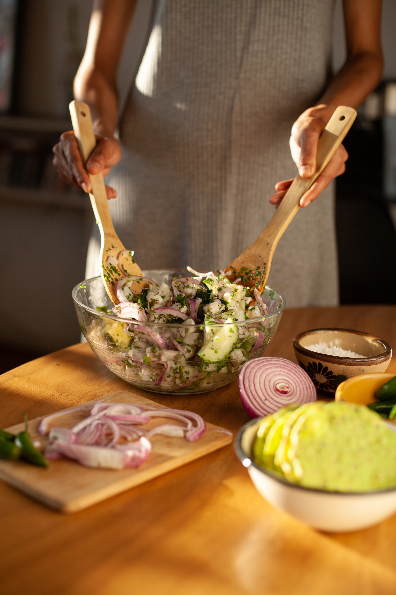

MIS RECETAS
Inicio
Arroz
Ensaladas
Tartas y empanadas
Pastas y panes
Carnes
Postres
Contacto

Bienvenido a mi recetario, en el podrás encontrar recetas sencillas de realizar para todos los días, y recetas mas elaboradas para ocaciones especiales. Espero que te diviertas en la cocina y disfrutes de la comida y sus sabores.